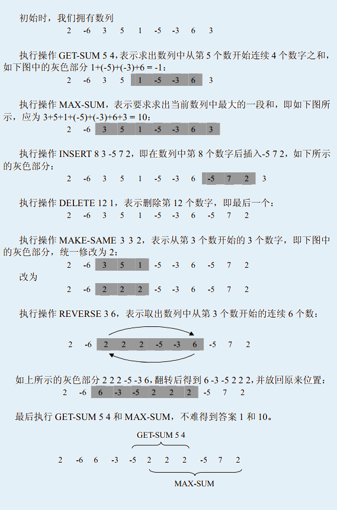

输入的第1 行包含两个数N 和M(M ≤20 000)，N 表示初始时数列中数的个数，M表示要进行的操作数目。
第2行包含N个数字，描述初始时的数列。
以下M行，每行一条命令，格式参见问题描述中的表格。
任何时刻数列中最多含有500 000个数，数列中任何一个数字均在[-1 000, 1 000]内。
插入的数字总数不超过4 000 000个，输入文件大小不超过20MBytes。
输入的第1 行包含两个数N 和M(M ≤20 000)，N 表示初始时数列中数的个数，M表示要进行的操作数目。
第2行包含N个数字，描述初始时的数列。
以下M行，每行一条命令，格式参见问题描述中的表格。
任何时刻数列中最多含有500 000个数，数列中任何一个数字均在[-1 000, 1 000]内。
插入的数字总数不超过4 000 000个，输入文件大小不超过20MBytes。
对于输入数据中的GET-SUM和MAX-SUM操作，向输出文件依次打印结果，每个答案（数字）占一行。
9 8
2 -6 3 5 1 -5 -3 6 3
GET-SUM 5 4
MAX-SUM
INSERT 8 3 -5 7 2
DELETE 12 1
MAKE-SAME 3 3 2
REVERSE 3 6
GET-SUM 5 4
MAX-SUM
-1
10
1
10